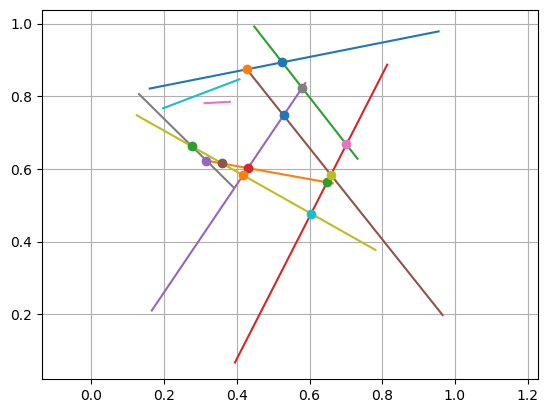

---
redirect_from:
  - "/computational-geometry/line-segment-interactions"
interact_link: content/Computational_Geometry/Line_Segment_Interactions.ipynb
kernel_name: julia-1.3
has_widgets: false
title: |-
  Line-segment Interactions
prev_page:
  url: /Computational_Geometry/Convex_Hull.html
  title: |-
    Convex Hull
next_page:
  url: /Computational_Geometry/Triangulations.html
  title: |-
    Triangulations
suffix: .ipynb

comment: "***PROGRAMMATICALLY GENERATED, DO NOT EDIT. SEE ORIGINAL FILES IN /content***"
---

    <main class="jupyter-page">
    <div class="jb_cell">

<div class="cell border-box-sizing text_cell rendered"><div class="inner_cell">
<div class="text_cell_render border-box-sizing rendered_html">
<h1 id="Line-segment-Intersections">Line-segment Intersections<a class="anchor-link" href="#Line-segment-Intersections"> </a></h1><p>A <em>line-segment</em> can be described by its two endpoints, $p_1$ and $p_2$, and denoted by $p_1p_2$. Note that the set of points on this segments can be expressed as $p_1 + s(p_2-p_1)$ for a parameter value $s\in[0,1]$.</p>
<p>To determine if $p_1p_2$ intersects another line-segment $q_1q_2$, we express the points on both segments in this way (with different parameters $s,t$), and set the points equal. This leads to the problem: Find $s,t\in[0,1]$ s.t.</p>
$$
p_1 + s(p_2 - p_1) = q_1 + t(q_2 - q_1)
$$<p>which can be reorganized as a 2-by-2 linear system of equations for $s,t$:</p>
$$
\begin{pmatrix}
p_2 - p_1 &amp; q_1 - q_2
\end{pmatrix}
\begin{pmatrix}
s \\ t
\end{pmatrix} =
\begin{pmatrix}
q_1 - p_1
\end{pmatrix}
$$<p>If the line-segments are parallel, the matrix is singular. For simplicity we simply say that they do not intersect in this case, but a better implementation would determine if they actually overlap.</p>

</div>
</div>
</div>
</div>

<div class="jb_cell">

<div class="cell border-box-sizing text_cell rendered"><div class="inner_cell">
<div class="text_cell_render border-box-sizing rendered_html">
<p>We implement the method in the function below, where we have also included a tolerance $\delta$. This is useful to handle the case when the intersection is close to one of the endpoints, then $\delta&gt;0$ would allow for a small positive overlap and $\delta&lt;0$ a small negative overlap.</p>

</div>
</div>
</div>
</div>

<div class="jb_cell">

<div class="cell border-box-sizing code_cell rendered">
<div class="input">

<div class="inner_cell">
    <div class="input_area">
<div class=" highlight hl-julia"><pre><span></span><span class="k">using</span> <span class="n">LinearAlgebra</span>
<span class="k">function</span> <span class="n">linesegment_intersect</span><span class="p">(</span><span class="n">p1</span><span class="p">,</span> <span class="n">p2</span><span class="p">,</span> <span class="n">q1</span><span class="p">,</span> <span class="n">q2</span><span class="p">,</span> <span class="n">δ</span><span class="p">)</span>
    <span class="n">A</span> <span class="o">=</span> <span class="p">[</span><span class="n">p2</span><span class="o">-</span><span class="n">p1</span> <span class="n">q1</span><span class="o">-</span><span class="n">q2</span><span class="p">]</span>
    <span class="n">b</span> <span class="o">=</span> <span class="n">q1</span><span class="o">-</span><span class="n">p1</span>
    <span class="k">if</span> <span class="n">rank</span><span class="p">(</span><span class="n">A</span><span class="p">)</span> <span class="o">==</span> <span class="mi">2</span>
        <span class="n">st</span> <span class="o">=</span> <span class="n">A</span> <span class="o">\</span> <span class="n">b</span>
        <span class="k">if</span> <span class="n">all</span><span class="p">(</span><span class="o">-</span><span class="n">δ</span> <span class="o">.≤</span> <span class="n">st</span> <span class="o">.≤</span> <span class="mi">1</span> <span class="o">+</span> <span class="n">δ</span><span class="p">)</span>
            <span class="n">pintersect</span> <span class="o">=</span> <span class="n">p1</span> <span class="o">+</span> <span class="n">st</span><span class="p">[</span><span class="mi">1</span><span class="p">]</span> <span class="o">*</span> <span class="p">(</span><span class="n">p2</span> <span class="o">-</span> <span class="n">p1</span><span class="p">)</span>
            <span class="k">return</span> <span class="kc">true</span><span class="p">,</span> <span class="n">pintersect</span>
        <span class="k">else</span>
            <span class="k">return</span> <span class="kc">false</span><span class="p">,</span> <span class="nb">nothing</span>
        <span class="k">end</span>
    <span class="k">else</span>
        <span class="c"># Warning: parallel lines, should check if they actually overlap</span>
        <span class="k">return</span> <span class="kc">false</span><span class="p">,</span> <span class="nb">nothing</span>
    <span class="k">end</span>
<span class="k">end</span>
</pre></div>

    </div>
</div>
</div>

<div class="output_wrapper">
<div class="output">

<div class="jb_output_wrapper }}">
<div class="output_area">


<div class="output_text output_subarea output_execute_result">
<pre>linesegment_intersect (generic function with 1 method)</pre>
</div>

</div>
</div>
</div>
</div>

</div>
</div>

<div class="jb_cell">

<div class="cell border-box-sizing code_cell rendered">
<div class="input">

<div class="inner_cell">
    <div class="input_area">
<div class=" highlight hl-julia"><pre><span></span><span class="c"># Example: n random lines, find and plot all intersections</span>
<span class="n">n</span> <span class="o">=</span> <span class="mi">10</span>
<span class="n">lines</span> <span class="o">=</span> <span class="p">[</span> <span class="p">[</span><span class="n">rand</span><span class="p">(</span><span class="mi">2</span><span class="p">),</span> <span class="n">rand</span><span class="p">(</span><span class="mi">2</span><span class="p">)]</span> <span class="k">for</span> <span class="n">i</span> <span class="o">=</span> <span class="mi">1</span><span class="o">:</span><span class="n">n</span> <span class="p">]</span>

<span class="c"># Plot all lines</span>
<span class="k">for</span> <span class="n">line</span> <span class="kp">in</span> <span class="n">lines</span>
    <span class="n">plot</span><span class="p">([</span><span class="n">line</span><span class="p">[</span><span class="mi">1</span><span class="p">][</span><span class="mi">1</span><span class="p">],</span> <span class="n">line</span><span class="p">[</span><span class="mi">2</span><span class="p">][</span><span class="mi">1</span><span class="p">]],</span> <span class="p">[</span><span class="n">line</span><span class="p">[</span><span class="mi">1</span><span class="p">][</span><span class="mi">2</span><span class="p">],</span> <span class="n">line</span><span class="p">[</span><span class="mi">2</span><span class="p">][</span><span class="mi">2</span><span class="p">]])</span>
<span class="k">end</span>

<span class="c"># Find all intersections - note that we only consider j&gt;i to avoid checking</span>
<span class="c"># the same 2 line-segments twice</span>
<span class="k">for</span> <span class="n">i</span> <span class="o">=</span> <span class="mi">1</span><span class="o">:</span><span class="n">n</span>
    <span class="k">for</span> <span class="n">j</span> <span class="o">=</span> <span class="n">i</span><span class="o">+</span><span class="mi">1</span><span class="o">:</span><span class="n">n</span>
        <span class="n">isect</span><span class="p">,</span> <span class="n">pq</span> <span class="o">=</span> <span class="n">linesegment_intersect</span><span class="p">(</span><span class="n">lines</span><span class="p">[</span><span class="n">i</span><span class="p">][</span><span class="mi">1</span><span class="p">],</span> <span class="n">lines</span><span class="p">[</span><span class="n">i</span><span class="p">][</span><span class="mi">2</span><span class="p">],</span> <span class="n">lines</span><span class="p">[</span><span class="n">j</span><span class="p">][</span><span class="mi">1</span><span class="p">],</span> <span class="n">lines</span><span class="p">[</span><span class="n">j</span><span class="p">][</span><span class="mi">2</span><span class="p">],</span> <span class="mi">0</span><span class="p">)</span>
        <span class="k">if</span> <span class="n">isect</span>
            <span class="n">plot</span><span class="p">(</span><span class="n">pq</span><span class="p">[</span><span class="mi">1</span><span class="p">],</span> <span class="n">pq</span><span class="p">[</span><span class="mi">2</span><span class="p">],</span> <span class="s">&quot;o&quot;</span><span class="p">)</span>
        <span class="k">end</span>
    <span class="k">end</span>
<span class="k">end</span>

<span class="n">axis</span><span class="p">(</span><span class="s">&quot;equal&quot;</span><span class="p">);</span> <span class="n">grid</span><span class="p">(</span><span class="kc">true</span><span class="p">);</span>
</pre></div>

    </div>
</div>
</div>

<div class="output_wrapper">
<div class="output">

<div class="jb_output_wrapper }}">
<div class="output_area">


<div class="output_png output_subarea ">

</div>

</div>
</div>
</div>
</div>

</div>
</div>

 


    </main>
    